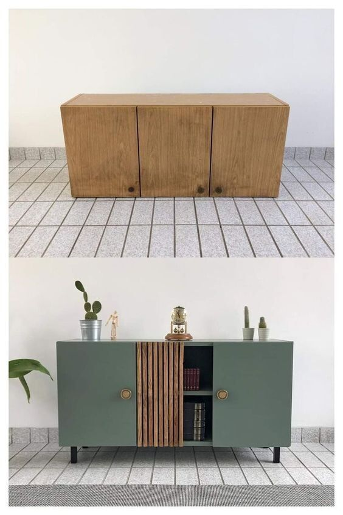
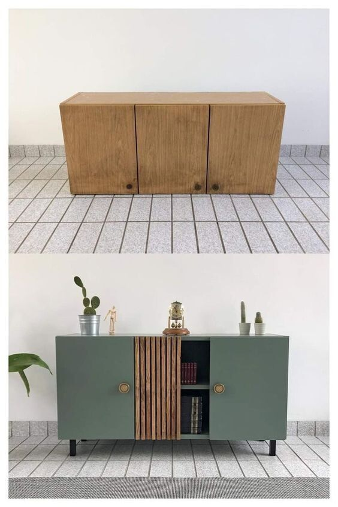
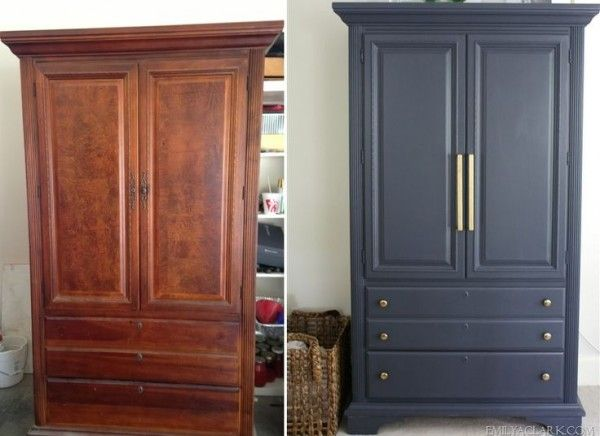
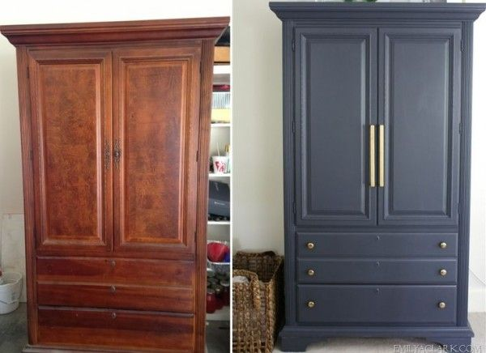

Rénovation & Décoration
Grâce à notre expertise, nous redonnons vie à vos anciens meubles, portes ou objets en bois. Voici quelques exemples :
 

 

Nous supprimons les imperfections, réparons les fissures et revernissons les surfaces pour leur offrir une nouvelle jeunesse, tout en préservant leur authenticité et leur charme original. Notre service comprend aussi des solutions de décoration bois adaptées à vos goûts et à votre espace.